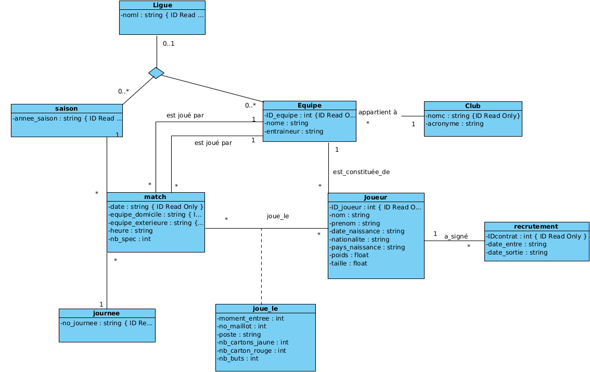

Projet : Conception d'une Base de Données - Championnats

🔍
×

Ce projet consistait à concevoir et implémenter une base de données relationnelle pour gérer les informations relatives à des championnats sportifs (équipes, joueurs, matchs, résultats, etc.).
La première phase a été la modélisation conceptuelle à l'aide d'un diagramme de classes UML, réalisé avec Visual Paradigm pour définir les classes, leurs attributs et leurs relations.
Ensuite, la base de données a été créée en utilisant le système de gestion de base de données Rel et le langage d'interrogation et de manipulation Tutorial D. Cela a permis de mettre en pratique les concepts de bases de données relationnelles appris en cours.
Technologies Utilisées
UML
Visual Paradigm
Base de Données Relationnelle
Rel
Tutorial D
Compétences Acquises
- Analyse des besoins et modélisation de données (UML)
- Conception de schémas de bases de données relationnelles
- Utilisation d'un SGBD
- Manipulation de données avec Tutorial D
- Travail en autonomie
- Analyse et structuration des données